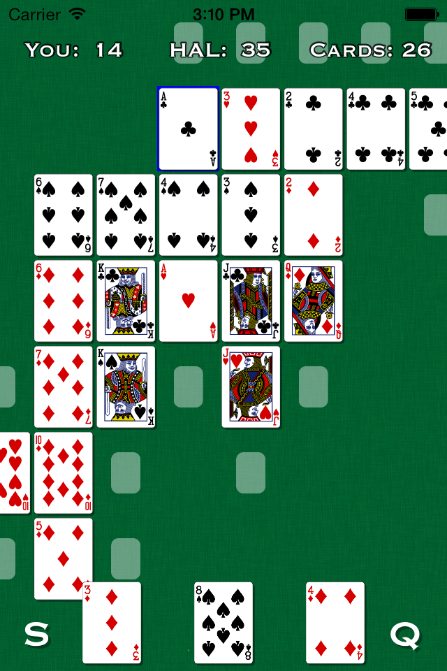

Pokeros is a mashup of poker and dominos. Players take turns placing cards in a two dimensional grid, attempting to create poker hands with each placement.

Pokeros was created as a game design exercise and was fun enough to merit turning into a (somewhat) proper game. You can play it for free on your iOS or Android device.
Pokeros is Copyright © 2013-2014 Michael Bayne but the source code is yours to peruse and adapt.